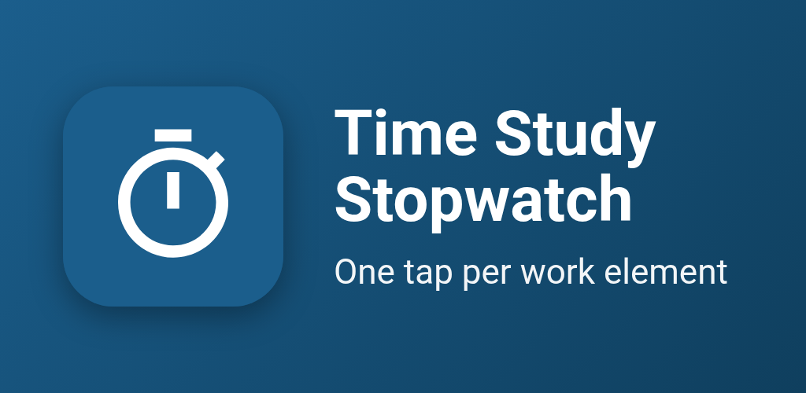
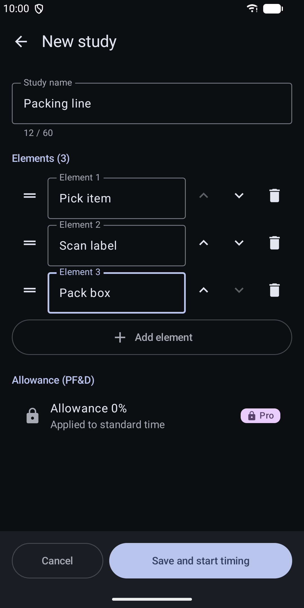
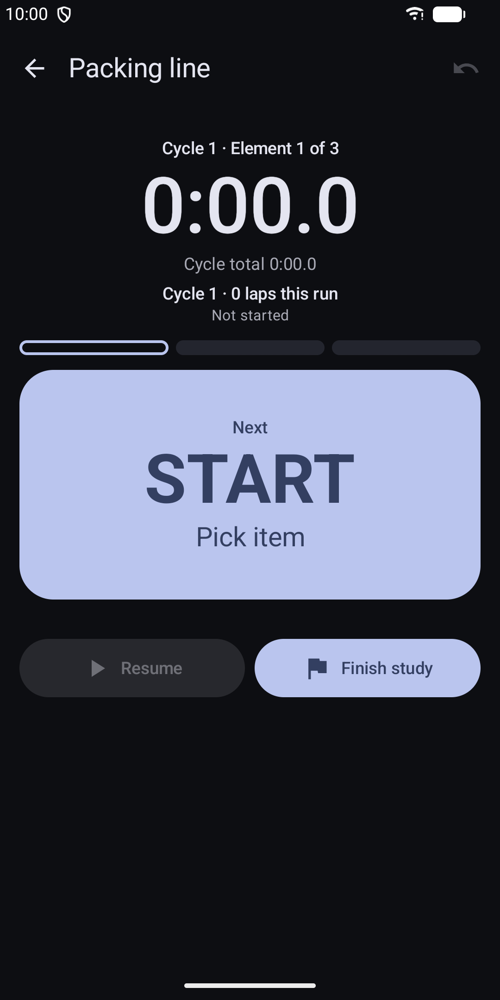
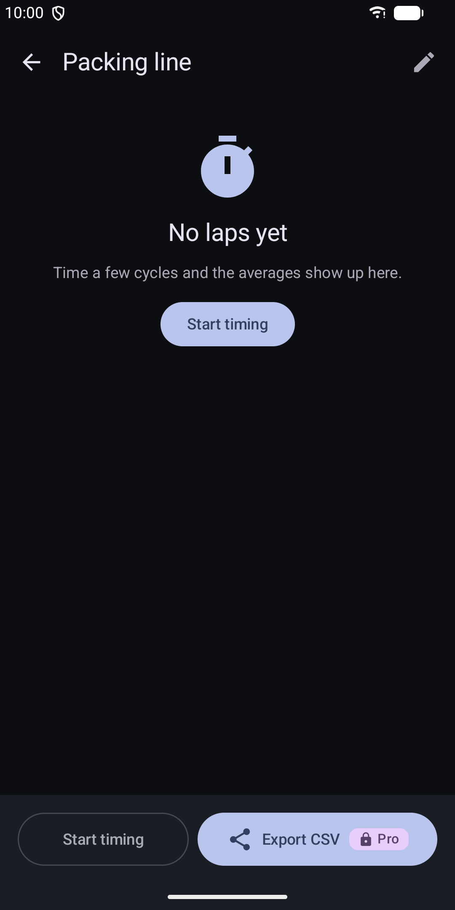
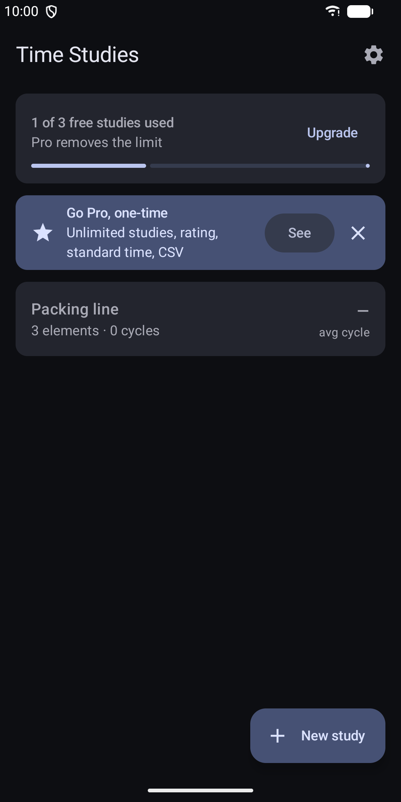
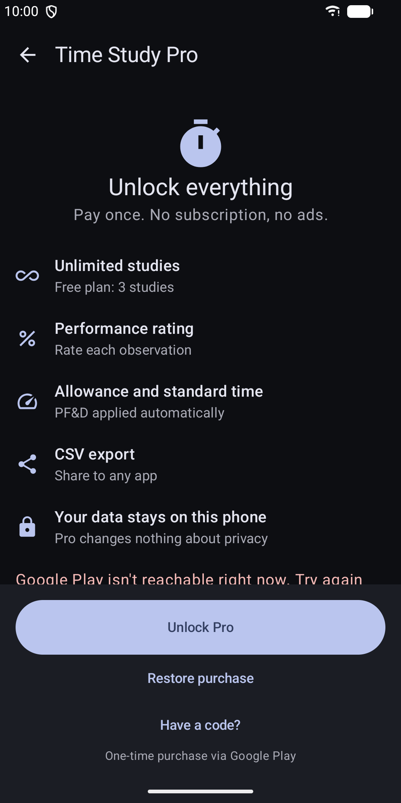
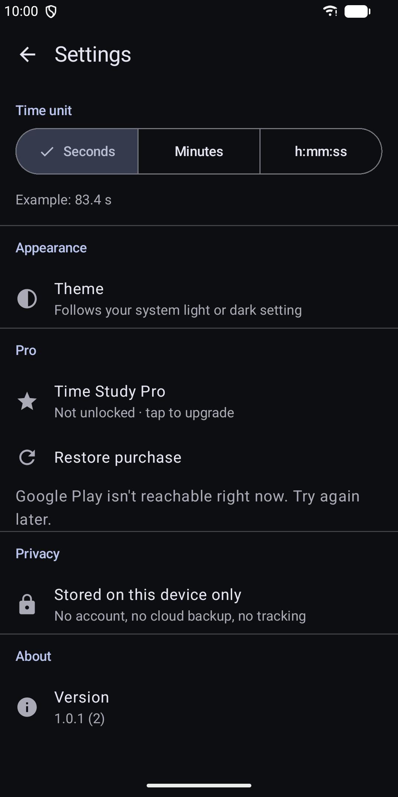

Zeitstudie Stoppuhr
Arbeitselemente per Tipp stoppen. Mittelwerte, Leistungsgrad, Vorgabezeit.







Über die App
Zeitstudie Stoppuhr macht aus deinem Smartphone ein Zeitaufnahmebrett für die Werkhalle, das Lager oder den Unterricht. Lege die Arbeitselemente einer Tätigkeit einmal an. Tippe dann auf den großen Rundenknopf, sobald ein Element endet. Die App erfasst jedes Element in jedem Zyklus, misst im Hintergrund weiter und hält den Bildschirm an, solange du arbeitest. Falsch getippt? Mit „Rückgängig“ ist die Zeit wieder da. Gemacht für Wirtschaftsingenieure, Lean- und Six-Sigma-Praktiker, Studierende des Wirtschaftsingenieurwesens und Schichtleiter. In der App enthalten: - Bis zu 3 Studien mit geordneten Arbeitselementen, die du hinzufügen, umbenennen und verschieben kannst - Ein großer Rundenknopf mit haptischem Feedback und Schutz vor Doppeltipps - Mehrere Zyklen pro Studie; ein laufender Timer übersteht App-Wechsel und Neustarts - Mittelwert, Minimum, Maximum und Standardabweichung pro Element und pro Zyklus - Jede Beobachtung bearbeiten oder löschen, mit Rückgängig - Zeiteinheit in Sekunden, Minuten oder h:mm:ss - Ein Widget für den Startbildschirm mit deiner letzten Studie - Helles und dunkles Design nach Systemeinstellung - TalkBack-Unterstützung und große Touch-Flächen - Layouts für Smartphone und Tablet Zeitstudie Pro ist ein Einmalkauf über Google Play. Es schaltet frei: - Unbegrenzt viele Studien - Leistungsgrad pro Beobachtung (50 bis 200 Prozent) - Zuschläge (Verteilzeit) und Vorgabezeit pro Zyklus - CSV-Export an jede App über das Teilen-Menü Deine Daten bleiben auf deinem Gerät. Die App hat kein Konto, keine Analyse und keine Internetberechtigung. Studien sind von der Cloud-Sicherung und der Geräteübertragung ausgeschlossen. CSV-Dateien sind gegen Formel-Injection in Tabellenkalkulationen geschützt. Die Vorgabezeit ist die Normalzeit mal eins plus Zuschlag. Die Normalzeit ist die mittlere gemessene Zeit, gewichtet mit deinem Leistungsgrad.